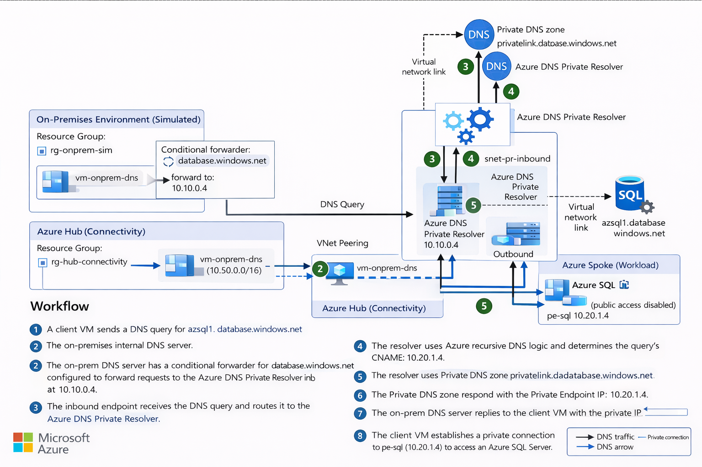

Cutover night has a predictable failure mode.
The hub is up. The VPN is stable. The Private Endpoint is approved. Azure SQL has public access disabled. Everyone is ready to celebrate.
Then someone runs one command:
$ nslookup azsql1.database.windows.netAnd the answer comes back public.
No outage banner. No firewall drop. No routing alarm.
Just DNS quietly sending your "private" traffic toward the public world.
This post documents the Hybrid DNS pattern we standardize on for UKLifeLabs-style landing zones. Central Private DNS zones in the hub. Azure DNS Private Resolver as the control plane. A design you can explain in 30 seconds and validate in 60.
TL;DR
Centralize Private DNS zones in your hub subscription. Use Azure DNS Private
Resolver (not VMs). One zone per service, never per team. Validate in 60 seconds with
nslookup. Get the Terraform code →
What We Are Solving
We want on-prem workloads and Azure spoke workloads to resolve Azure PaaS service names to Private Endpoint IPs, without:
- DNS forwarder VM fleets
- split-brain DNS zones across spokes
- manual record creation during migration waves
- last-minute fixes on cutover night
Non-negotiable rule
If the service is private, the name must always resolve to a private IP.
Challenge: DNS Ownership Breaks Private Endpoint Designs
The most common failure is not networking. It is ownership.
When every team creates its own Private DNS zones, you get:
- inconsistent records
- partial resolution depending on where the query originates
- outages that only appear during cutover
Key takeaway
Private Endpoints are a network feature, but DNS is an operating-model decision.
Decision 1: Centralize Private DNS Zones in the Hub
All Private DNS zones live in the Hub (Connectivity) subscription or resource group.
Example:
privatelink.database.windows.net
Why this works:
- single source of truth
- simple governance story
- predictable behavior across all spokes
Rule
One zone per service. Never one zone per team.
Decision 2: Use Azure DNS Private Resolver (No DNS VMs)
We deliberately avoid DNS forwarder VMs.
Instead we use:
- Azure DNS Private Resolver
- Inbound endpoint for on-prem → Azure queries
- Optional Outbound endpoint for Azure → on-prem resolution
Benefits:
- managed service
- no patching
- no custom HA design
- built for hub-and-spoke scale
Key takeaway
DNS should not be a custom VM workload.
Target Architecture
Topology: On-prem → Hub → Spoke

Hub (Connectivity)
- Azure DNS Private Resolver
- Inbound endpoint (example:
10.10.0.4)
- Inbound endpoint (example:
- Central Private DNS zone
privatelink.database.windows.net
- VNet links to spokes that require resolution
Spoke (Workload)
- Azure SQL Server (public access disabled)
- Private Endpoint
pe-sql(example:10.20.1.4) - Private DNS zone group linked to the hub zone
Workflow: Cutover-Safe Resolution Path
- Client queries
azsql1.database.windows.netvia on-prem DNS - On-prem DNS conditionally forwards
database.windows.netto Resolver inbound endpoint - Inbound endpoint hands query to DNS Private Resolver
- Resolver determines Private Link CNAME
- Resolver queries
privatelink.database.windows.net - Private DNS zone returns Private Endpoint IP
- Resolver returns answer to on-prem DNS
- On-prem DNS returns private IP to client
- Client connects privately to Azure SQL via Private Endpoint
Result
Same name. Private IP. Private path.
Why This Survives Cutover Night
- Central DNS governance
- Predictable resolution chain
- No hidden DNS VMs
- One place to validate and troubleshoot
Common Failure Modes
Watch out for these
- Forwarding
privatelink.*instead of public suffix - Private DNS zone not linked to the required VNet
- Private Endpoint missing DNS zone group
- NSGs blocking UDP/TCP 53 to inbound endpoint
60-Second Validation Test
From on-prem:
$ nslookup azsql1.database.windows.netExpected:
- Private Endpoint IP
If you get a public IP, DNS is broken.
Operating Model
Platform Team
- DNS Private Resolver
- Private DNS zones
- VNet links
- Policy and guardrails
Application Teams
- Private Endpoints
- Request or attach DNS zone groups
Reference Implementation
A working Terraform-based reference implementation is available here:
https://github.com/appliedailearner/privatednsresolver
Closing Thought
Private Link is not the hard part.
Making DNS boring is.
This pattern does exactly that.
What's Next?
Ready to operationalize your Azure journey?
I help organizations turn stalled cloud initiatives into execution engines.